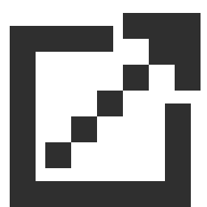

A I R B R U S H
Instructions
To use: Click and drag around the canvas to draw!
To use the blur tool (which is very slow...) click and drag between two points. The rectangular selection between the two points will be blurred together.
Link to repo 
[Back to Main Menu]